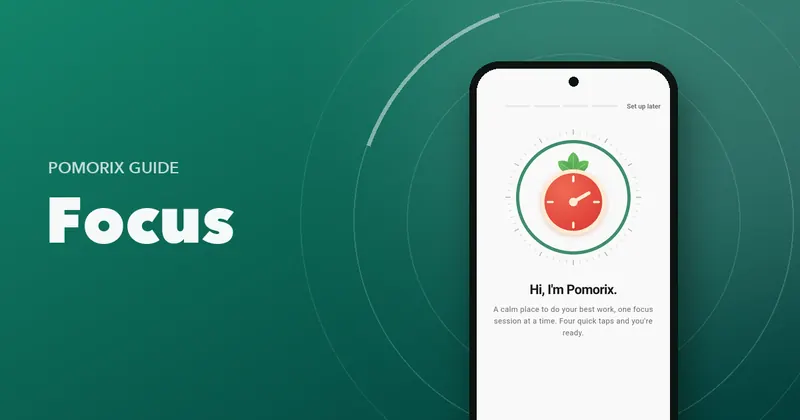
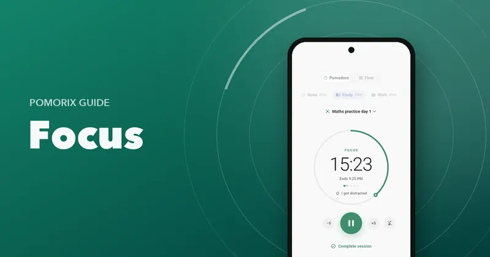

The Pomorix blog
Focus better, study smarter, get more done.
Practical guides to the Pomodoro Technique, studying, deep work and lasting habits. Short on theory, long on what to do next.

All articles
-
 Pomodoro Technique
Pomodoro Technique
How to Use a Pomodoro Timer: A Step-by-Step Guide for Beginners
A practical walkthrough of your first day with a Pomodoro timer: setting it up, planning tasks, running sessions, taking breaks and reviewing your focus. -
 Pomodoro Technique
Pomodoro Technique
25/5, 50/10 or 90 Minutes? How to Choose Your Pomodoro Length
Compare the most popular Pomodoro intervals (25/5, 50/10, 52/17 and 90-minute blocks) and find the focus and break length that suits your work. -
 Pomodoro Technique
Pomodoro Technique
What to Do on a Pomodoro Break: 25 Ideas That Actually Recharge You
The best things to do in a 5-minute or 30-minute Pomodoro break, what to avoid, and how to make sure your break ends on time. -
 Habits & Tracking
Habits & Tracking
How Many Pomodoros a Day Is Realistic? A Guide to Setting a Daily Focus Goal
How many Pomodoro sessions you can really do in a day as a student or professional, how to set a daily focus goal, and how to grow it without burning out. -
 Pomodoro Technique
Pomodoro Technique
Flowtime vs Pomodoro: Which Focus Method Fits the Way You Work?
How the Flowtime Technique (Flowmodoro) differs from the Pomodoro Technique, the pros and cons of each, and how to combine them for study and deep work. -
 Pomodoro Technique
Pomodoro Technique
How to Choose the Best Pomodoro Timer App for Android: A 12-Point Checklist
What separates a great Pomodoro or study timer app from a distracting one: 12 things to check before you install, from reliable alerts to privacy and stats. -
 Studying
Studying
How to Study with the Pomodoro Technique: A Study Plan That Actually Works
Use the Pomodoro Technique to study smarter: plan revision in sessions, combine it with active recall and spaced repetition, and follow a sample study day. -
 Studying
Studying
How Long Should You Study Without a Break? A Practical Guide to Study Breaks
How long you can study before your focus fades, how often to take breaks, how long they should be, and the signs you need one right now. -
 Studying
Studying
How to Make an Exam Study Schedule You'll Actually Follow
A step-by-step way to build an exam revision timetable: count your study time, split topics into sessions, space your revision and adjust every week. -
 Studying
Studying
How to Stay Focused While Studying: 15 Practical Tips That Work
15 practical, research-backed ways to concentrate while studying: set up your space, beat phone distractions, use focus sessions and keep your energy up. -
 Studying
Studying
Brown Noise, Rain or Lo-fi? How to Choose Focus Sounds for Studying
Does background noise help you study? Compare brown, pink and white noise, rain, café sounds and lo-fi, and learn how to pick the right sound for each task. -
 Habits & Tracking
Habits & Tracking
How to Track Your Study Hours (and Why It Makes You Study More)
Why tracking focused study time works, what to measure, how to review it weekly, and the easiest ways to log study hours without extra effort. -

Focus & ProductivityHow to Stop Procrastinating: 12 Tactics That Start With Just 25 Minutes
Why you procrastinate (it's not laziness), and 12 tactics to start the tasks you've been avoiding, from tiny first steps to timed focus sessions. -
 Focus & Productivity
Focus & Productivity
How to Improve Your Focus and Concentration: A Practical, Science-Backed Guide
Why focus feels harder than ever, and practical ways to rebuild your concentration: single-tasking, focus sessions, attention training, sleep and tracking. -
 Focus & Productivity
Focus & Productivity
How to Do Deep Work: Plan, Protect and Track Your Deep Work Sessions
A practical guide to deep work: what it is, how long sessions should be, how to schedule and protect them, and how to measure your deep work over time. -
 Focus & Productivity
Focus & Productivity
How to Stop Checking Your Phone While Studying or Working
Why you keep picking up your phone, and 10 practical ways to stop: distance, Do Not Disturb, timed sessions, notification clean-up and better breaks. -

Focus & ProductivityPomodoro Technique for ADHD: How to Make Timers Work for Your Brain
Practical ways to adapt the Pomodoro Technique for ADHD: shorter sessions, visible time, handling hyperfocus, body doubling, transitions and rewards. -
 Focus & Productivity
Focus & Productivity
The Pomodoro Technique for Programmers: Focus Without Losing Your Flow
How developers can use the Pomodoro Technique without breaking flow: longer sessions, Flow mode, handling builds and code reviews, and protecting focus. -
 Habits & Tracking
Habits & Tracking
How to Build a Daily Focus Habit with Goals and Streaks
Turn focused study or work into a daily habit: start tiny, anchor it to your routine, set a realistic goal, use streaks wisely and recover from missed days.
Turn reading into focused hours
Pomorix puts these guides into practice: a Pomodoro timer, Flow mode, tasks, focus sounds, goals and streaks. Free, no ads, no account.
Get it onGoogle PlayFree · No ads · Android 7.0 and up